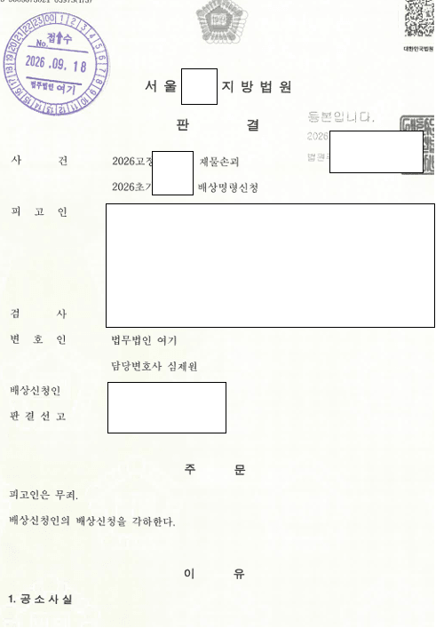
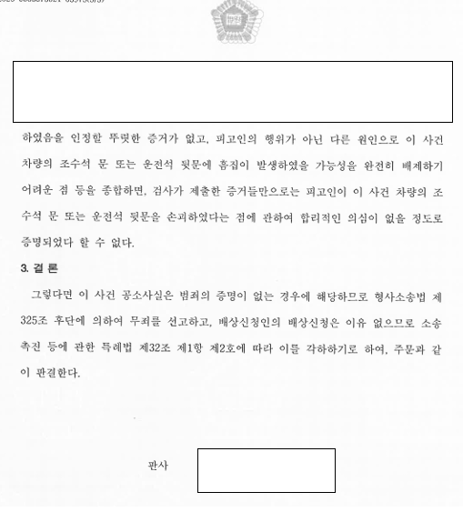

01사건 개요
주차 문제로 다툼이 있던 아파트 입주민이, 다음 날 분실 택배를 찾던 택배기사가 자기 차를 긁었다고 신고한 사건입니다. 경찰과 검찰은 별다른 조사 없이 기소했습니다.
02쟁점
- CCTV와 블랙박스 영상이 정말 손괴를 보여 주는지
- 녹음된 소리와 실제 흠집이 맞는지
03변호사가 한 일
- 흠집은 양쪽에 있는데 블랙박스 충격은 한 번뿐이라는 점을 짚었습니다.
- '북' 하는 짧은 소리 한 번으로는 길게 난 흠집 4개가 생길 수 없다는 점을 지적했습니다.
- CCTV를 여러 번 돌려 보며 의뢰인의 동선을 설명하는 자료를 만들었습니다.
- 같은 옷을 입고 재현해 그 소리가 플라스틱 지퍼에서 난다는 점을 증거로 냈습니다.
04결과
법원은 검찰 증거만으로는 피고인이 했다고 볼 수 없고 다른 원인일 수 있다며 무죄를 선고했습니다.


이 사례는 원문을 요약해 정리한 것입니다. 사건 경과와 판결문 등 전체 내용은 로톡에 게시된 원문에서 볼 수 있습니다.
로톡에서 전문 보기 →05비슷한 상황이라면
CCTV나 블랙박스가 있다고 해서 유죄가 정해지는 것은 아닙니다. 영상과 흔적이 정말 맞는지부터 다시 봐야 합니다.
집행유예 기간 중에 다시 집행유예를 받을 수 있나요?
원칙적으로는 어렵지만, 새로 기소된 범죄가 형법 제37조 후단 경합범에 해당하면 다시 집행유예가 가능할 수 있습니다. 필로폰 투약으로 집행유예 기간 중이던 의뢰인이 다시 집행유예를 받은 사례가 있습니다.
음주운전이 세 번째인데 벌금으로 끝날 수 있나요?
사안에 따라 가능합니다. 혈중알코올농도 0.137%로 약 10km를 운전한 세 번째 음주운전 사건에서, 검찰 송치 직후 의견서를 제출해 정식재판 없이 약식명령 벌금으로 끝난 사례가 있습니다.
무죄를 받으면 국가에서 보상을 받을 수 있나요?
구금에 대한 형사보상과 변호사 보수 등 재판 비용 보상을 청구할 수 있습니다. 무죄 확정 후 형사보상금 492만 원, 630만 원을 받은 사례가 있습니다.
평일 09:00–18:00 변호사가 직접 전화를 받습니다.
재판으로 자리에 없는 경우 로톡으로 상담을 신청하시거나 이메일로 문의해 주세요.
의뢰인이 특정되지 않도록 사실관계를 일부 줄이거나 바꾸어 정리했습니다. 사건의 결과는 구체적인 사실관계와 증거에 따라 달라질 수 있으며, 같은 결과를 보장하지 않습니다.